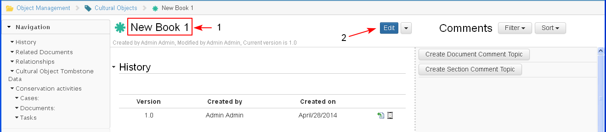

Only users with respective roles could edit object details.
- Administrator - could edit each object
- Project Manager, Collaborator - could edit all objects, associated in a project
- Contributor - could edit objects which he/she created or attached to the project/ case
- Consumer - not allowed to edit domain objects
- The user opens the object (1) in preview and clicks the button "Edit" (2).

- The object details section is opened for editing and the user could add new or update existing data (1). The user could save or cancel the changes.
- The user clicks "Save" (2).

- When the changes on an object are saved (1) automatically a new version of the object is created (2). The first version is 1.0 and each next version increases the version number with 0.1.

- When an object is opened for edit from one user, it is locked for editing from others and the following superscription on the object is displayed: "This object is opened for edit from <User name> and you cannot edit it now".
When the edit is completed the superscription disappears.
- When an object is opened for edit from one user, it is locked for editing from others and the following superscription on the object is displayed: "This object is opened for edit from <User name> and you cannot edit it now".
- The description of a change is kept under the object version in the Version History section and an user could always refer to what changes have been made. (NOT READY)